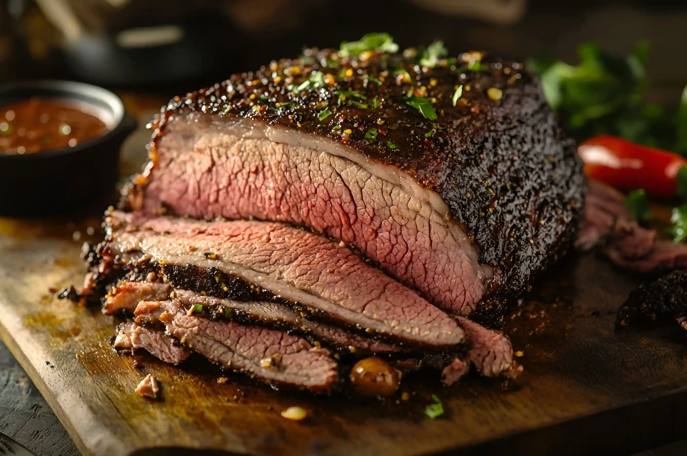
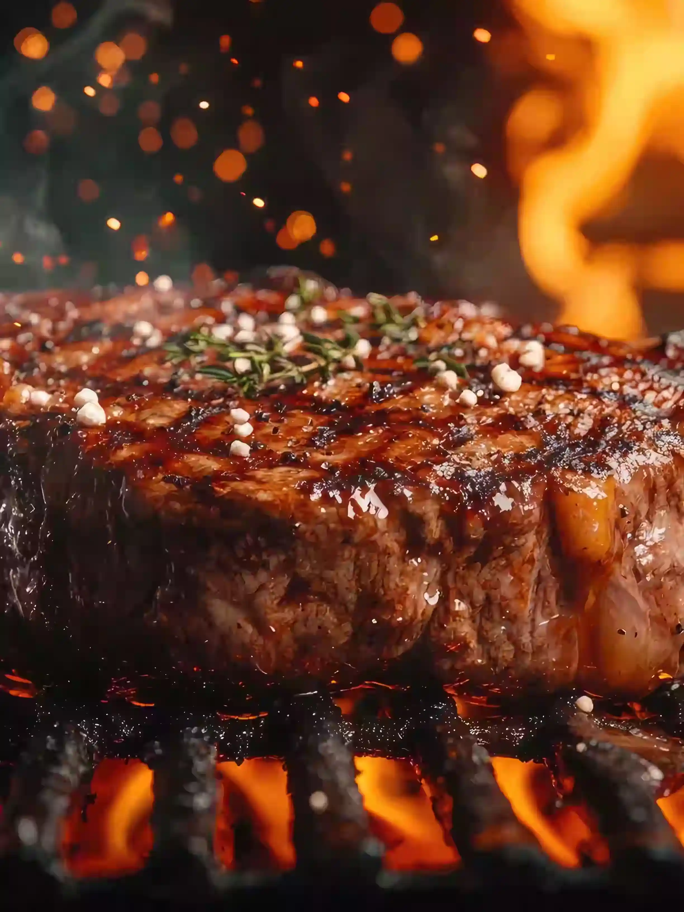
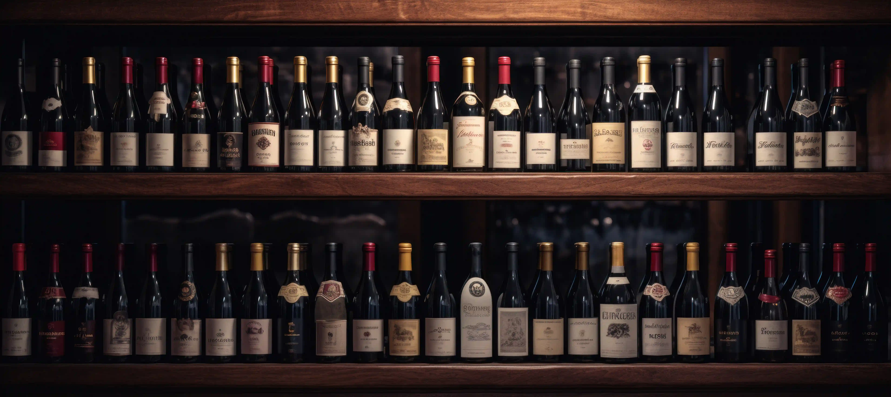
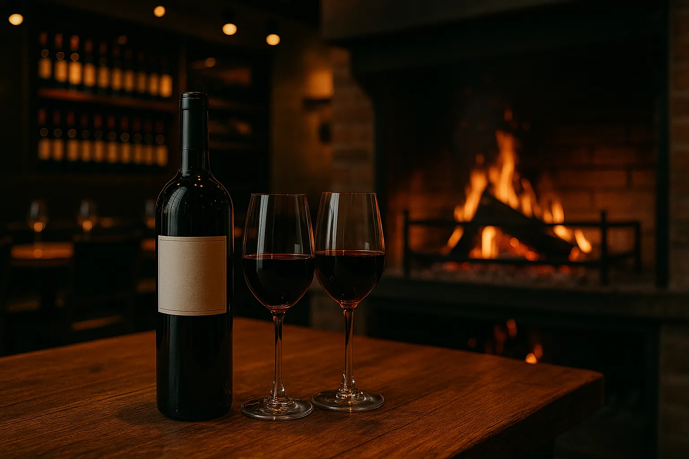
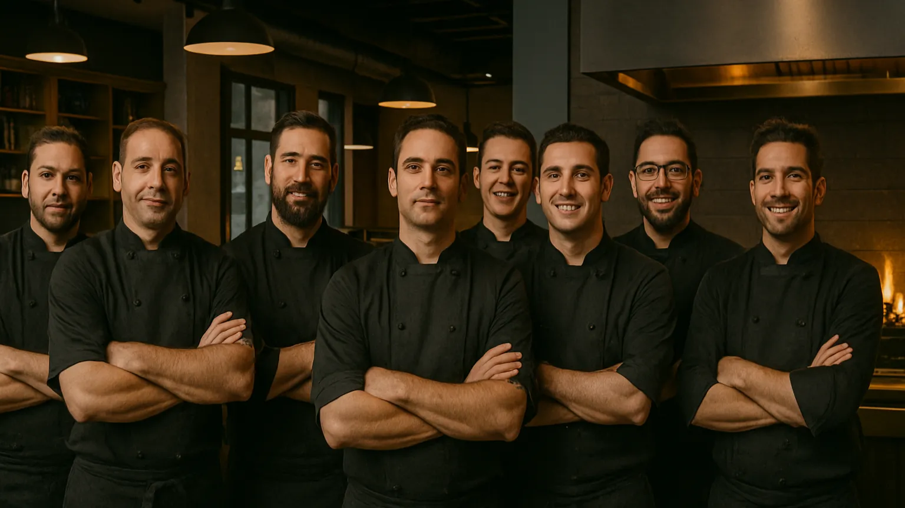

EL ARTE DE LA AUTÉNTICA PARRILLA ARGENTINA
Cada corte lleva consigo la esencia del campo, el crujir del fuego y la dedicación de manos expertas.
LA CARNE
Nuestra carne se selecciona cuidadosamente, eligiendo cortes de calidad que destacan por su sabor y terneza. Es el proceso que nos permite lograr ese color dorado y ese aroma inconfundible que despierta todos los sentidos.
Cada pieza se cocina al fuego con dedicación, respetando el producto y realzando su esencia. El resultado deja una huella: la de una experiencia hecha con pasión y respeto por la carne.




LOS VINOS
Los vinos también son parte esencial de nuestra propuesta. Cada etiqueta fue cuidadosamente seleccionada para acompañar nuestros platos y realzar la experiencia en cada copa. Desde pequeños productores hasta bodegas reconocidas.
Cada vino cuenta una historia, y en cada servicio buscamos que esa historia se comparta, se sienta y se disfrute. Porque un buen vino no solo acompaña, transforma la mesa en un momento inolvidable.
